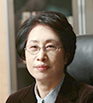

-
제1대 성좌경 박사 1972. 3.~1976. 2.
학력
1942. 9. 일본동경공업대학(학사)
1964. 2. 서울대학교 (박사)경력
1953.10~1960.5 국방부과학연구소 부소장
1966.4~1967.6 원자력연구소 소장
1967.6~1968.9 원자력청장 -
제2, 3대 이재철 박사 1976. 3.~1980. 2. / 1980. 3.~1981. 8.
학력
1948. 8. 서울대학교 (학사)
1973. 8. 영남대학교 (박사)경력
1963.3~1967.4 감사원 감사위원
1967.4~1971.6 과학기술처 차관
1971.6~1976.3 교통부 차관 -
제4대 김희철 박사 1981. 12.~1983. 12.
학력
1943. 9. 경성제국대학 (학사)
1962. 2. 서울대학교 (박사)경력
1949.4~1976.3 서울대학교 교수
1976.4~1980.3 인하대학교 대학원장 -
제5, 6대 박태원 박사 1983. 12.~1987. 12. / 1987. 12.~1990. 2.
학력
1949. 7. 서울대학교 (학사)
1969. 8. 서울대학교 (박사)경력
1961.5~1976.3 서울대학교 교수
1977.7~1979.6 한국화학공학회 회장
1982.1 아세아 태평양화학공학연맹 한국대표이사 -
제7대 원영무 박사 1990. 2.~1994. 2.
학력
1958. 3. 인하공과대학 (학사)
1960. 3. 인하공과대학 (석사)
1974. 2. 인하공과대학 (박사)경력
1960.4~1963.2 인하공과대학 부설 종합직업학교 교사
1963.3~1988.11 인하대학교 교수
1988.12~1990.2 인하대학교 부총장 -
제8대 조성옥 박사 1994. 2.~1998. 2.
학력
1956. 9. 서울대학교 (학사)
1961. 6. 서울대학교 (석사)
1977. 2. 동국대학교 (명예박사)경력
1973.5~1977.2 문교부차관
1977.2~1977.4 충남대학교 총장
1981.4~1984.11 한국학술진흥재단 이사장
1984.11~1990.6 유네스코 한국위원회 사무총장 -
제9대 노건일 박사 1998. 3.~2002. 2.
학력
1962. 2. 서울대학교 (학사)
1970. 2. 서울대학교 (석사)
1998. 6. 건국대학교 (명예박사)경력
1978.10~1998.4 내무부/경남도/제주도 부지사/ 대통령 민정비서관
1988.5~1990.2 산림청장
1990.3~1991.2 내무부 차관
1991.3~1993.2 교통부 장관 -
제10, 11대 홍승용 박사 2002. 3.~2006. 2. / 2006. 3.~2008. 12.
학력
1972. 2. 고려대학교 (학사)
1983. 2. 서울대학교 (석사)
1988. 8. 경희대학교 (박사)
1990. 8. 미국 MIIT대 해양정책센터 (박사후과정)
2004. 4. 프랑스 Le Havre대 명예 경제학박사
2005. 5. 미국 URI 명예 법학박사경력
1997.8~1999.5 한국해양수산개발원 원장
1999.5~2002.2 해양수산부 차관
2005.7~2007.8 대통령 자문 국민경제 자문회의 자문위원 -
제12대 이본수 박사 2009. 3.~2012. 2.
학력
1968. 2. 서울대학교 공과대학 응용화학과(공학사)
1970. 2. 서울대학교 대학원(공학석사)
1974. 8. 서울대학교 대학원(공학박사)경력
2001.1~2001.12 한국 공업화학회 회장
2003.1~2003.12 한국화학관련학회연합회 회장
2005.3~2006.2 인하대학교 대학원장
2006.3~2009.2 인하대학교 부총장 -
제13대 박춘배 박사 2012. 3.~2014. 12.
학력
1974. 2. 서울대학교 공과대학 항공공학과(공학사)
1976. 2. 서울대학교 대학원(공학석사)
1989. 8. 서울대학교 대학원(공학박사)경력
2002.4~2005.3 인천국제공항공사 사외이사
2005.3~2006.3 국방부 국방획득정책자문위원회 위원
2007.3~2012.2 인하공업전문대학 총장 -

제14대 최순자 박사 2015. 2.~2017. 12.
학력
1975. 2. 인하대학교 화학공학과(학사)
1982. 12. 미국 남가주대학교(USC) 화학공학(석사)
1985. 12. 미국 남가주대학교(USC) 화학(박사)경력
2004.3~2008.2 (사)한국여성공학기술인협회 1·2대 회장
2011.1~2011.12 (사)한국여성과학기술단체총연합회 5대 회장
2013.7~2015.3 교육부 교원양성평등위원회 위원장